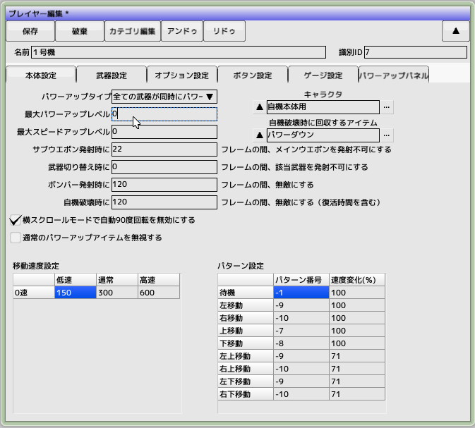
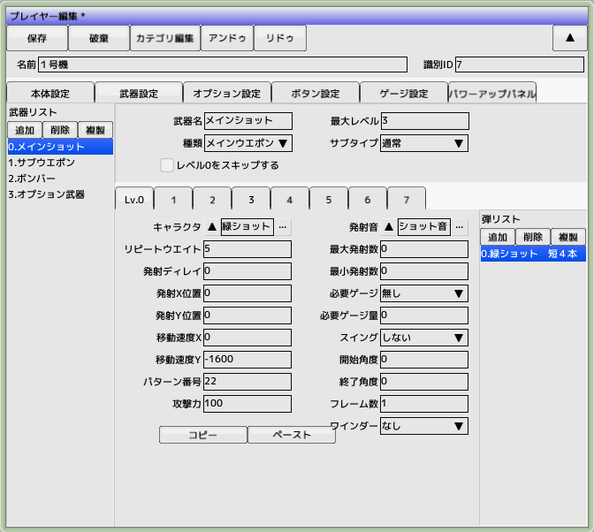
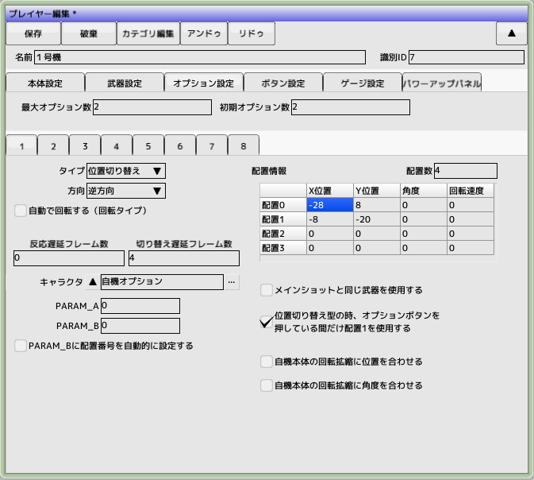
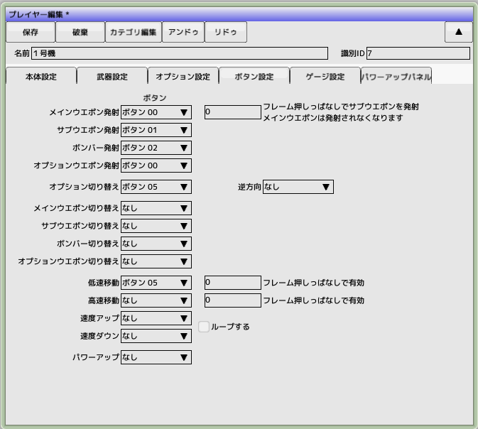
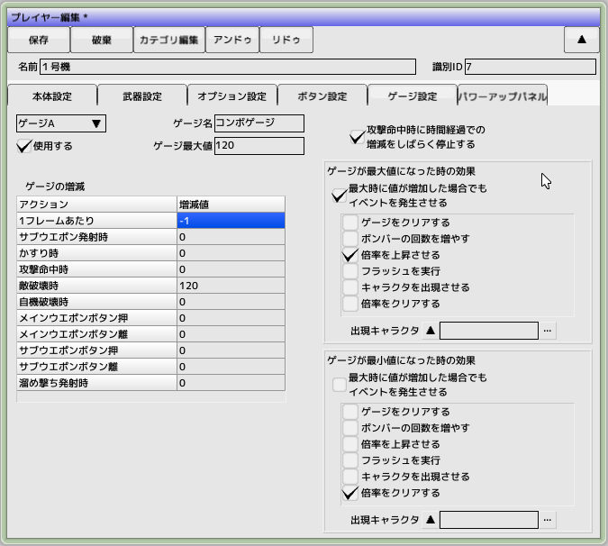
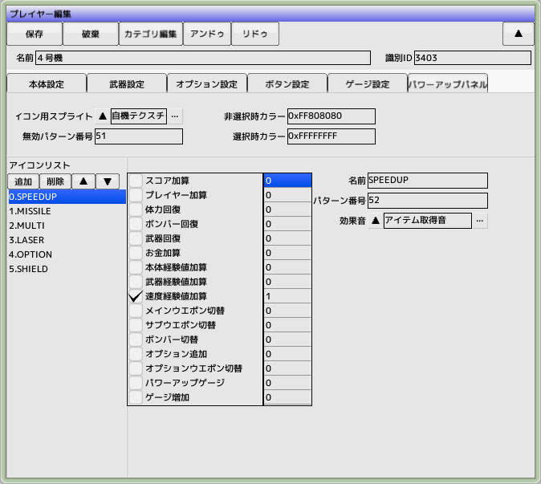

■元のページへ戻る
■元のページへ戻る
本体設定タブ

- パワーアップタイプ
アイテム等で武器がパワーアップするときの動作を指定します
- 全ての武器が同時にパワーアップする
- 武器は個別にパワーアップする
- 最大パワーアップレベル
未使用
- 最大スピードアップレベル
アイテムで速度アップしたり、ボタンで可変速にする場合に指定します
- キャラクタ
プレイヤー用に使用するキャラクタを選択します
- 移動速度設定
- 通常
ノーマル状態の移動速度
- 低速
低速移動ボタンを押したときの移動速度
- 高速
高速移動ボタンを押したときの移動速度
- パターン設定
それぞれの方向に移動した時のパターン番号を指定します
- 横スクロールモードで自動90度回転を無効にする
旧版との互換用、チェックを入れておいてください
- 通常のパワーアップアイテムを無視する
ゲージ増加、スコア加算、プレイヤー加算、ボム加算以外のアイテムを取得しても無視します
武器設定タブ

プレイヤーが使うことの出来る武器を設定します（左側のリストに表示されているものが武器リストです）
- 武器名
リストに表示される文字列。ゲームに影響ありません
- 種類
武器の種類を選択します。また、アイテム等で武器を切り替える時のカテゴリとして機能します。オプションを選択したときは子IDも指定してください。カウンター攻撃はかすり時に自動攻撃します
- 最大パワーアップレベル
武器ごとの最大レベルを設定します。全ての武器を一律の値にする必要はありません
- レベル０をスキップする
ボタンで武器チェンジを行う場合に、パワーアップレベル０を未所持とみなしてスキップします
- サブタイプ
サブウエポンの種類を指定します。溜め打ちの場合はゲージ設定と合わせて設定する必要があります
- 通常
普通の武器を作成するときに使用します
- 溜め打ち(離したときに発射)
ボタンを押して溜め、離して発射するタイプの溜め打ちを作成するときに使用します
- 溜め打ち(押したときに発射)
ボタンを離して溜め、押して発射するタイプの溜め打ちを作成するときに使用します
武器レベルタブ
武器レベルごとに発射する弾を設定します（右側のリストに表示されいるものが弾リストです）
- キャラクタ
弾用に使用するキャラクタを選択します
- ショット音
発射時に再生される効果音です。複数の弾を一度に発射する場合はどれか一つだけに設定するようにしてください
- リピートウエイト
ボタンを押しっぱなしにした時の連射速度をフレーム単位で指定します。溜め打ち時には無効
- 発射ディレイ
ボタンを押してから発射されるまでの時間をフレーム単位で指定します。溜め打ち時には無効
- 発射ＸＹ位置
発射する位置を自機からのオフセットで指定します
- 移動速度ＸＹ
弾が移動する速度を指定します。スクリプトを記述すれば動作を詳細に設定できます
- パターン番号
キャラクタ編集で設定したパターン番号よりこちらが優先されます
- 攻撃力
キャラクタ編集で設定した攻撃力よりこちらが優先されます
- 最大発射数
同時に画面内に存在できる数です。最小発射数と合わせて設定が必要です
- 最小発射数
ショットの発射に必要な空き数です。最大発射数と合わせて設定が必要です。例）３WAYショットを2連射したい場合、最大発射数に６を最小発射数に３を設定してください
- スイング
ボタンを押しっぱなしにしたときに発射角度を変化させることができます
- 片道
開始角度から終了角度まで指定フレーム数で変化します
- 往復
終了角度まで変化し後、開始角度まで指定フレーム数で変化します
- リピート
終了角度まで到達すると開始角度から再開します
- ワインダー
自機の移動に合わせてショットも移動するようになります縦と横が設定できます
- 必要ゲージ、必要ゲージ量
溜め打ち時に必要なゲージ。溜め打ち時のみ有効で、ゲージ量に応じて一番武器レベルの高いものが発射されます
- コピー＆ペースト
弾の設定をコピペできます
オプション設定タブ

- 最大オプション数
同時にオプションを装備できる数
- タイプ
オプションの基本種類
- 位置固定
常に固定位置になります。右側の配置Ａを使用します
- 位置切り替え
右側の配置位置で指令された場所に固定されます。オプションボタンで配置を４つまで切り替えることができます
- 自機追尾
自機が移動した経路を辿ります。反応遅延時間で指定したフレーム数分だけ時間が遅延します
- 回転
右側の配置位置を初期位置に、自機の回りを回転します。回転速度負数にすると逆回転します。通常はオプションボタンで回転しますが、自動回転にチェックを入れると常に回転し続けます
- オプション方向（攻撃方向）
- 固定方向
右側の配置位置の角度で指定された方向を向きます
- 進行方向
自機が移動する方向へ自動的に向きます
- 逆方向
自機が移動する方向の逆へ自動的に向きます
- 外側を向く
自機への方向と逆を向きます
- 反応遅延時間
自機の移動に対して移動を遅らせる時間
- 切り替え遅延時間
位置切り替え型のオプションが位置を入れ替えるのにかかる時間
- キャラクタ
オプション用のキャラクタを指定します
- メインショットと同じ武器を使用する
本来オプションは武器の種類としてオプションを指定されたものを発射します。これにチェックをいれるとそれを無視してメインウエポンを発射します
ボタン設定タブ

- メインウエポン発射
武器の種類でメインウエポンを指定したものを発射するボタン
- 押しっぱなし切替
指定したフレーム数ボタンを押しっぱなしにするとメインウエポンを停止し、サブウエポンを発射するようになります
- サブウエポン発射
武器の種類でサブウエポンを指定したものを発射するボタン
- ボンバー発射
武器の種類でボンバーを指定したものを発射するボタン
- オプションウエポン発射
武器の種類でオプションを指定したものを発射するボタン
- オプション切り替え
オプションの配置場所変更、回転等を行うボタン
- メインウエポン切り替え
メインウエポンを順に切り替えるボタン
- サブウエポン切り替え
サブウエポンを順に切り替えるボタン
- ボンバー切り替え
ボンバーを順に切り替えるボタン
- オプションウエポン切り替え
オプションウエポンを順に切り替えるボタン
- 低速移動
本体の設定で低速に移行するボタン、押しっぱなし時間を設定可能
- 高速移動
本体の設定で高速に移行するボタン、押しっぱなし時間を設定可能
- 速度アップ
本体の速度を一段階上昇させるボタン、ループ可能
- 速度ダウン
本体の速度を一段階下降させるボタン、ループ可能
- パワーアップ
パワーアップがパネル式の時にパワーアップを行うボタン
ゲージ設定タブ

ゲージは３つまで設定可能です
- 使用する
チェックすると有効になります。使用するゲージはチェックを入れます
- ゲージ名
ゲーム中には使われません
- ゲージ最大値
ゲージが増加する最大値。この値を超えたときに効果が発生します
- ゲージの増減
- 1フレームあたり
1フレーム経過するごとに、この値が加減算されます
- サブウエポン発射時
サブウエポンが発射されるごとに、この値が加減算されます
- かすり時
かすり判定が発生した時に、この値が加減算されます
- 攻撃命中時
ショットが敵に命中した時に、この値が加減算されます
- 敵破壊時
敵を破壊した時に、この値が加減算されます
- 自機破壊時
自機が破壊されたときに、この値が加減算されます
- メインウエポンボタン押
ボタンが押された時に加減算されます
- メインウエポンボタン離
ボタンが離された時に加減算されます
- サブウエポンボタン
ボタンが押された時に加減算されます
- サブウエポンボタン
ボタンが離された時に加減算されます
- 溜め撃ち発射時
武器設定で設定された溜め撃ち発射時に加減算されます
- 攻撃命中時に時間経過の増減をしばらく停止する
自機のショットが敵に命中したフレームから10フレームの間、時間経過の増減を停止します
- ゲージ最大値(最小値)になった時の効果
- ゲージをクリアする
ゲージ値を0にします
- ボンバーの回数を増やす
ボンバーの使用回数を＋１します
- 倍率を上昇させる
未使用
- フラッシュを実行
指定したキャラクタでフラッシュ効果を発生させます
- キャラクタを出現させる
指定したキャラクタを画面上方から出現させます
- 倍率をクリアする
上昇した倍率を元に戻します

パワーアップパネルタブ
パネル式のパワーアップを設定します
描画用にレイアウトを設定する必要があります
- アイコン用スプライト
パネル表示用のスプライトを指定します
- 無効パターン番号
パネルが使用不可の時のパターン番号を指定します
- 選択、非選択時描画カラー
アイコンを描画するカラーを32ビットARGBで指定します
パネル内アイコン設定
- 名前
ゲーム内では使用しません
- パターン番号
パネルアイコンのパターン番号を指定します
- 効果音
パワーアップした時の効果音を指定します
- パワーアップ内容
キャラクタ設定のアイテムページと同じ内容です
■ページ上部へ戻る